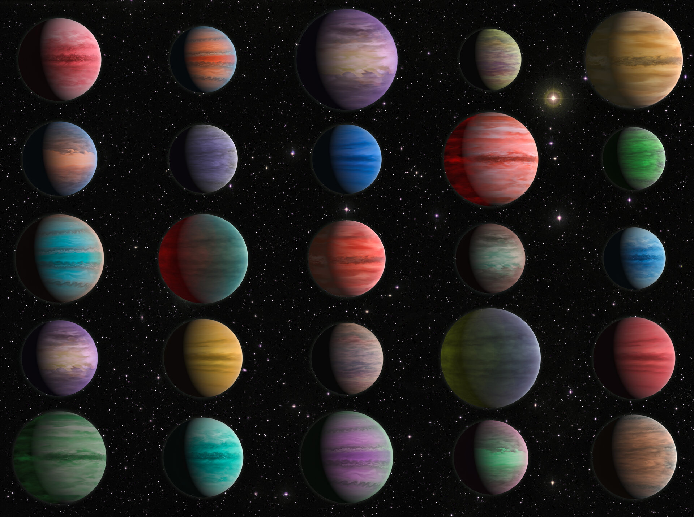

DISCOVER THE WONDERS OF THE UNIVERSE.
Welcome to our space exploration page! Here, we take you on a captivating journey through the mysteries of the universe, from distant galaxies to the mysterious black holes to breathtaking nebulae.

Nebula are captivating cosmic clouds of gas and dust.
Astronaut in space viewing Earth from Moon.
The Moon is our celestial companion.The Moon is Earth's only natural satellite, and it is the fifth-largest satellite in the Solar System.

Halley's Comet is a cosmic visitor.Halley's Comet is one of the most famous comets and is visible from Earth approximately every 76 years.

Black Hole is a mysterious cosmic phenomenon.Black holes have such strong gravitational forces that nothing, not even light, can escape their grasp.

Dwarf Planet are small celestial bodies.Pluto, once considered the ninth planet, is now classified as a dwarf planet in our solar system.
Star is a brilliant celestial object.Stars are massive balls of gas, primarily hydrogen and helium, that undergo nuclear fusion to produce light and heat.

Sun is our nearest star.The Sun provides the energy that sustains life on Earth through a process called nuclear fusion in its core.
Exoplanet are the planets beyond our solar system.Thousands of exoplanets have been discovered orbiting stars outside our solar system, some in the habitable zone.